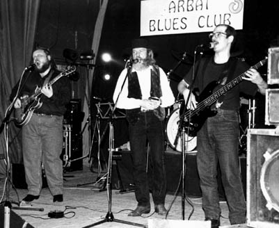

Борис Булкин - гитара,
вокал
Алексей Попов - бас-гитара,
вокал
Павел Жданкин - ударные
Анатолий Подлипенцев -
звукорежиссура
Bright Lights, Big City (J.Reed) (2
784k)

Eyes Like A Cat (Little Walter) (492k)

 (1 479k)
(1 479k)
Brown Stone (Б.Булкин) (2
710k) 
Фрагмент передачи
ВЕСЬ ЭТОТ БЛЮЗ о группе